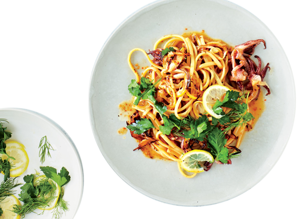

Testenine sa morskim plodovima

Sastojci
- 300 gr. plodova mora
- 1/2 glavice crnog luka
- malo maslinovog ulja
- beli luk
- 2 dl. belog vina
- začini
- parmezan
Priprema
- Crni luk iseckati sitno, a beli izgnječiti. Na ulju propržiti prvo crni luk, a zatim pri kraju dodati beli i još malo propržiti.
- Dodati morske plodove i sve začine i dinstati dok ne ispari skoro sva tečnost. Naliti vinom i dinstati dok vino ne ispari.
- Testeninu skuvati, ocediti i pomešati sa pripremljenim morskim plodovima. Posuti parmezanom i služiti toplo.
Izvor: Dijeta plus zdravlje